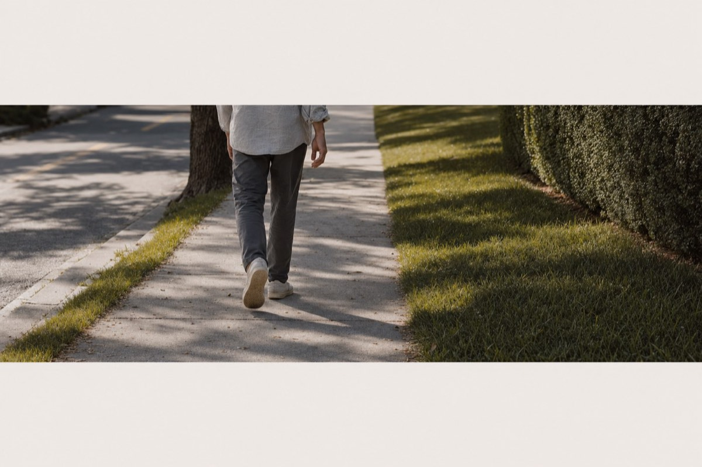
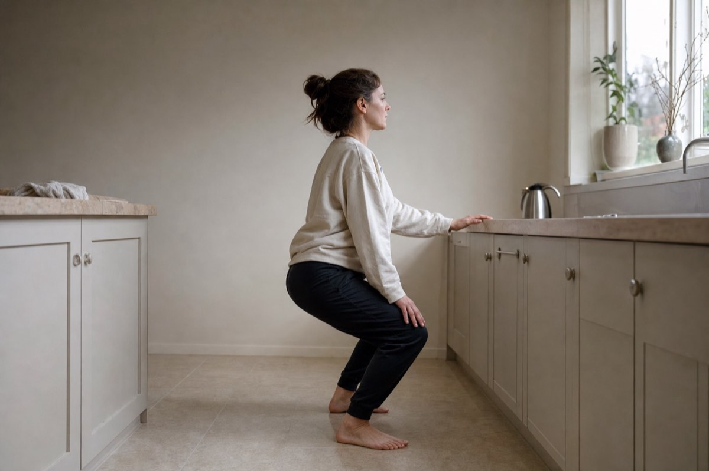
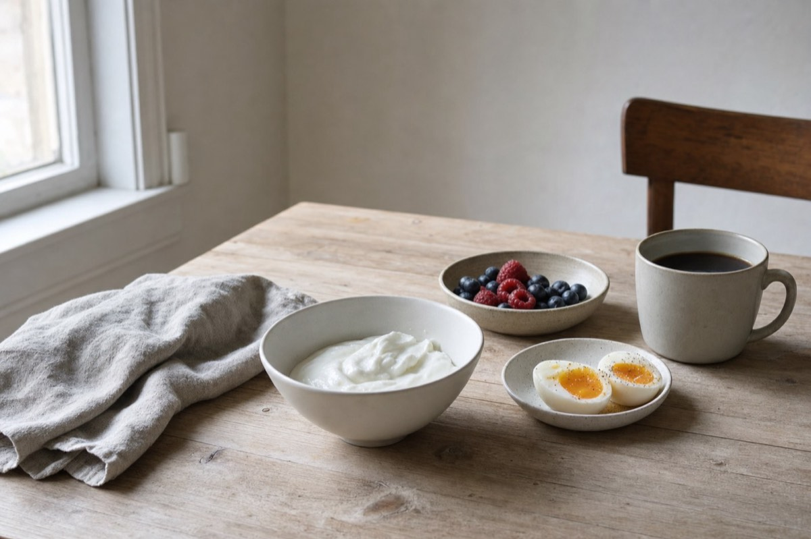

Why the afternoon crash keeps happening, and the small moves that flatten it.
Fourteen days. Three changes. About ten minutes a day, none of it in a gym.
This isn't a diet and you don't have to give anything up. You won't be counting anything, weighing anything, or cutting out bread. Every change in here is something you add, and two of the three take under a minute.
What it does: it steadies the rise and fall of your blood sugar after you eat, which is the thing sitting underneath the 3pm crash.
What it doesn't do: change your weight in two weeks, replace anything your doctor has told you, or work on the days you skip it. That last one's worth saying out loud. This works on the days you do it, and not on the days you don't.
Read the next two pages before you start. They're the reason the three changes are the three changes, and knowing why makes them a lot harder to drop on day four.
You know the feeling. Somewhere between two and four in the afternoon the lights dim. Focus goes, your eyes get heavy, and you want something sweet with a force that has nothing to do with hunger.
The same afternoon, left alone and with the plan. The dip is what sends you looking for sugar.
You eat.Carbohydrate from the meal turns into glucose and your blood sugar climbs. The bigger and faster that climb, the more insulin your body sends to clear it.
The clearing overshoots.Insulin does its job and then some, so an hour or two later your blood sugar isn't just back to normal. It's dipped below where it started.
The dip is the crash.Low blood sugar feels like tiredness, poor focus, and a very specific pull toward sugar, because sugar is the fastest way back up.
So you have a snack, or a coffee, or both.Which climbs fast, clears hard, and dips again. That's the loop, and by 4pm you're inside it.
The part worth sitting with: the crash is what creates the craving. You're not losing an argument with yourself at 3pm. You're responding to a dip that started at lunch. Willpower is being asked to fix something that was never a willpower problem, which is why trying harder hasn't worked.
It is not a character flaw. It's a sequence.
What flattens it isn't eating less. It's making the climb smaller and the dip shallower, and that's what the next three pages are about.
Three changes. That's the whole plan.
The most effective thing on this list, and the least demanding.
Sixty seconds. No equipment, no changing clothes.
Not more food. The same breakfast, in a different order, with one addition.
You don't need all three on day one. Start with the walk, because it does the most work, and add the others once the walk has stopped feeling like a decision.
There's a calendar near the back with fourteen days on it and three boxes a day. Print it and put it somewhere you'll see it.

Your muscles can pull glucose out of your blood without waiting for insulin, and moving them opens that route. So a short walk while the food is still being absorbed takes the top off the climb, and that's what makes the dip later on shallower.
Timing matters more than effort here. A slow ten minute walk twenty minutes after lunch does more for your afternoon than a hard forty minute walk in the evening, because by evening the glucose from lunch is long gone.
If you only change one thing, change this one. Lunch is the meal that sets up your afternoon, so if you walk after one meal a day, walk after lunch.

Same mechanism as the walk, just concentrated. Working muscle takes glucose straight out of the blood, and the more muscle you involve the more it takes. Your thighs and glutes are the biggest muscles you've got, which is why squats are on this list and sit ups aren't.
Calf raises are the sitting-down version and they're not a lesser option. The calf is built to keep working for hours without tiring, so it'll happily keep drawing on your blood sugar long after your thighs have asked to stop. If you're at a desk all day, do these.
Ten of those. If ten's too many, do five. If five's too many, stand up and sit down from a chair five times, and that's the same exercise.
Sitting or standing, lift your heels so you're up on the balls of your feet, then lower them. Thirty of those, slowly. You should feel it in the back of your lower leg.
Do these just before you eat, or within an hour after. Not first thing in the morning on an empty stomach, because there's nothing there to move yet.

Two things are happening here and both of them turn up in the afternoon.
The order changes the shape of the climb. Protein and fat slow how fast the meal leaves your stomach, so the same food eaten protein-first gives you a gentler rise than the same food eaten toast-first.
The amount changes how long you stay full. Thirty grams at breakfast tends to mean you're not hunting for something at eleven, and the eleven o'clock snack is usually the one that sets up the afternoon.
| Breakfast | Roughly |
|---|---|
| Three eggs | 18g |
| Greek yoghurt, one cup | 20g |
| Cottage cheese, one cup | 25g |
| Protein shake, one scoop | 20 to 25g |
| Two eggs plus a yoghurt | 30g |
| Oats with milk and a scoop of protein | 30g |
Most breakfasts land at ten to fifteen grams. Getting to thirty usually means adding one thing, not rebuilding the meal.
Where this one is weaker. It has less behind it than the walk and the squats. The evidence that a bigger protein breakfast cuts what you eat later is decent without being overwhelming, and it varies more from person to person. It's on the list because it costs almost nothing to try, and because the people it works for tend to notice inside a week.
If the walk is the only thing you ever do, you're still doing the part that matters most.
The three moves are the behaviour half. The companion guide covers what people take: what has evidence behind it for cravings, for focus and for steady energy, and what does not.
A snack's job here is to get you to the next meal without a climb. That means protein, fat, fibre or acid, and not much sugar.
You'll want something sweet at 3pm on some of these days anyway. Have it, note it in the journal, and carry on. A day with a biscuit in it is still a day you did the plan.
Five to ten minutes after one meal a day, and make it lunch if you get to choose. Tick the box. That's week one.
If the walk already feels easy by day three, add the squats. If it doesn't, leave them. Stacking a second habit onto a first one you're not doing yet is how plans quietly end.
Some people feel a difference in the first few days and some feel nothing for a week. Both are normal and neither tells you how this is going to go. The thing to watch isn't day three, it's whether 3pm on day twelve feels different from 3pm on day one. That's what the journal is for.
Print this page and put it somewhere you'll see it. Three boxes a day.
W walked after a meal · S squats or calf raises · P protein first at breakfast
One line a day. Ten seconds, and it's the only record of whether this worked.
Rate your energy at 3pm from one to five, where one is the lights going out and five is not noticing the afternoon at all. Then write down what you had for lunch, in about four words.
That's it. No calorie counting and nothing to weigh.
Two weeks of a number and four words is enough to show you a pattern you can't feel day to day, and the pattern is the point. On day fourteen you'll be able to look down the column and see whether your worst afternoons follow a particular lunch.
| Day | 3pm energy, 1 to 5 | Lunch |
|---|---|---|
| 1 | ||
| 2 | ||
| 3 | ||
| 4 | ||
| 5 | ||
| 6 | ||
| 7 | ||
| 8 | ||
| 9 | ||
| 10 | ||
| 11 | ||
| 12 | ||
| 13 | ||
| 14 |
It is the supplement half of the same plan, and it is easier to read it now than to go looking for it on day nine.
The walk after lunch, sixty seconds of squats or calf raises somewhere in the day, and thirty grams of protein at breakfast.
Aim for five days out of seven. A plan you keep five days a week for a year beats one you keep perfectly for nine days and then abandon, and this is the week that decides which of those you're building.
Keep the journal going. Week two's numbers are the ones you'll be comparing against.
In the first week, the usual change is that the dip gets shallower rather than disappearing. Less of a wall, more of a slope.
In the second week, what people tend to notice is the craving rather than the tiredness. Wanting something sweet at 3pm stops feeling urgent, which is what happens when the dip driving it gets smaller.
What won't change in fourteen days. Your weight, in any way worth measuring. Your sleep, unless the afternoon coffee was what was wrecking it. Anything a doctor is currently treating.
What this can't touch. If your afternoons are hard because you're not sleeping, or because of a medication, or because of something going on medically, then a walk after lunch isn't the answer to that and nobody should pretend it is.
You did the fourteen days. The walk, the squats, the protein. And the afternoon is still a slog.
That happens, and it usually comes down to one of three things.
The dip was never the main problem. If you're running on six hours of sleep, your afternoons were always going to be hard, and no amount of walking after lunch fixes a sleep debt. This is the most common answer by a long way.
The habit is there but the days aren't. Four days out of fourteen isn't the plan, it's an experiment that didn't run. Worth another two weeks before you conclude anything.
The behaviour is doing what it can, and something else is carrying the rest. Appetite, mood, energy and how your body handles fuel are separate systems, and moving after meals reaches some of them and not others. Cravings between meals in particular aren't mostly a post-lunch-walk problem.
That third one is where a lot of people land, and it's the point where what you eat and when you move stops being the whole conversation.
There's a second guide about that. It covers what people take rather than what they do: what has evidence behind it for cravings, for focus and for steady energy, and what doesn't. It's free, and it isn't in this document.
Message whoever sent you this and ask for the companion guide. They'll send it over.
Green tea for cravings, what actually helps focus, and how to read a label. Free, and it comes straight from whoever sent you this.
Three changes. A walk, sixty seconds, and a different order at breakfast.
None of it is impressive on its own, and that's the reason it works. There's nothing here to be good at and nothing to fall off, just a few small things that happen to land at the moment your body is dealing with a meal.
If you do one of the three for the next fortnight, do the walk after lunch.
Good luck with it.
This guide is general health and wellness information for educational purposes only. It is not medical, nutritional, diagnostic or treatment advice, and it is not a weight loss program.
We are not physicians, registered dietitians or licensed healthcare providers. This content is not a substitute for professional advice.
Talk to your physician or a qualified healthcare provider before changing how you eat or starting any new physical activity, particularly if you are pregnant or nursing, have an injury or an existing medical condition, or take any medication. This is especially important if you are being treated for blood sugar, because changes to activity and meal composition can affect how that treatment works.
Individual experiences vary and no particular outcome is promised. Stop any exercise that causes pain.